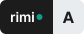
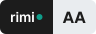
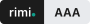
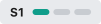
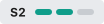
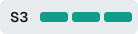

The "yes" example
The assistant offers two options. The user answers "Yes." What happens next?
Without a convention
AssistantOption 1, direct flight at 2 pm, or option 2, 9-hour stopover?
UserYes.
AssistantGuesses one of the two, or asks the same question again, and again.
With rimi. (CONV-001)
AssistantOption 1, direct flight at 2 pm, or option 2, 9-hour stopover?
UserYes.
AssistantI'm going with option 1. Say 2 if you preferred the other one.
L'exemple du « oui » en français
Sans convention
AssistantOption 1, vol direct à 14h, ou option 2, escale de 9h ?
UtilisateurOui.
AssistantDevine l'une des deux, ou repose la même question, encore et encore.
Avec rimi. (CONV-001)
AssistantOption 1, vol direct à 14h, ou option 2, escale de 9h ?
UtilisateurOui.
AssistantJe retiens l'option 1. Dites 2 si vous préfériez l'autre.
What this is
De quoi il s'agit
A growing set of short, testable rules that say what an LLM does when it would otherwise guess, smooth over or invent. They are independent of any model, provider or industry. When the LLM applies a rule, it says so, and the user can correct it.
Des règles courtes et testables qui disent ce que fait un LLM quand il aurait tendance à deviner, arranger ou inventer. Indépendantes de tout modèle, fournisseur ou secteur. Le LLM annonce la règle qu'il applique, et l'utilisateur peut corriger.
Version 0.2.0 · Draft: 14 principles, 35 behaviour rules (CONV), 11 design rules (CONC), 20 frugality rules (SOB).
Conformance levels
Niveaux de conformité
Reliability · Fiabilité



Frugality · Sobriété



Example claim: rimi. AA · S2 (v0.2.0). Reliability comes first: a frugal answer that is wrong is not a saving.
Take part
Participer
Propose a rule, report a real case, object to a rule. Everything happens in the open.